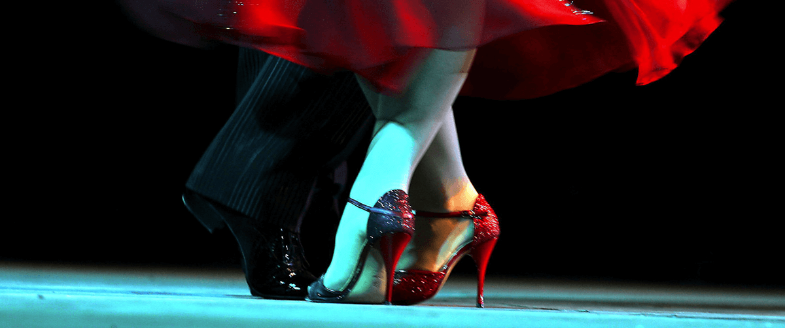
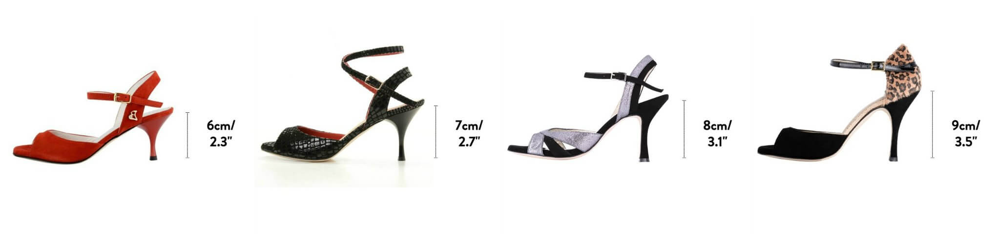
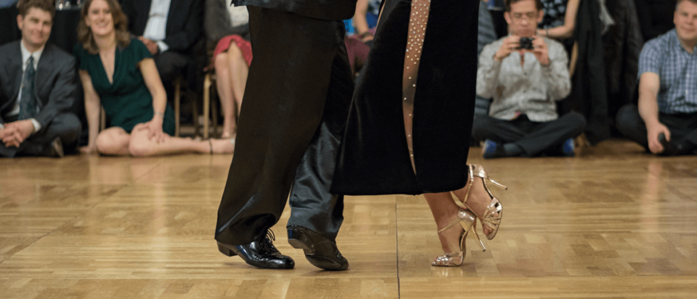
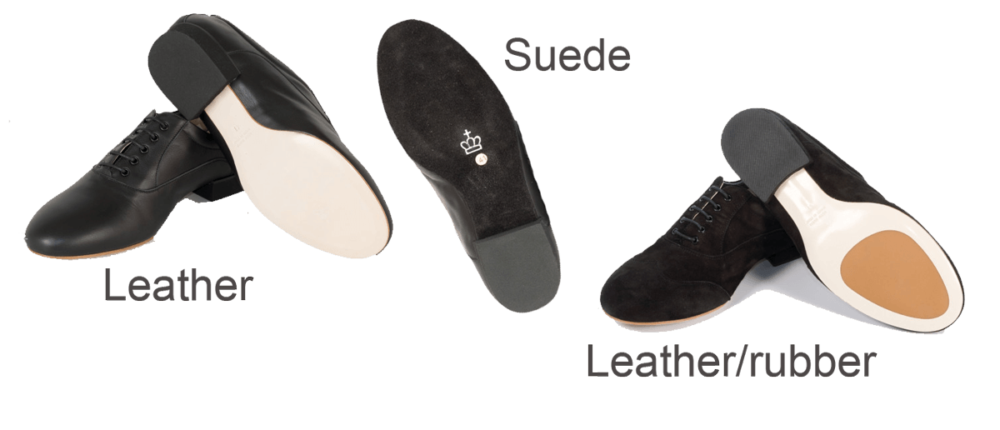
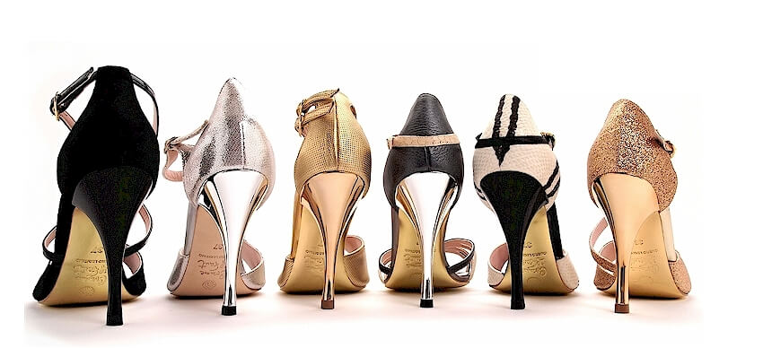

De bonnes chaussures de tango améliorent la technique de danse, réduisent les blessures et augmentent le plaisir du tango argentin. Découvrez nos 5 conseils essentiels pour choisir les chaussures parfaites.
Pourquoi les Chaussures de Tango Sont Importantes
Les chaussures de tango de qualité améliorent la technique, réduisent le risque de blessures et élèvent l'expérience de danse par rapport aux baskets ou chaussures de ville ordinaires. Une fois que vous en avez fait l'expérience, vous ne voulez plus du tout revenir à vos chaussures de ville.
Conseil 1 : Légèreté et Soutien Approprié
Les chaussures de danse sont conçues pour être plus légères que les chaussures de ville tout en offrant un meilleur soutien de la cheville et des articulations. Leur semelle spécialisée en cuir (peau de chamois) offre une adhérence adéquate sur les parquets sans friction excessive.

Cette composition réduit les blessures aux chevilles, hanches et genoux en facilitant les mouvements du pied.
Conseil 2 : Équilibre et Hauteur du Talon
Les chaussures appropriées distribuent mieux le poids, améliorant la stabilité. Les talons devraient mesurer au moins 5 cm pour les femmes et 1,5 à 2 cm pour les hommes.

Conseil important : "Augmentez la hauteur de votre talon et ne la diminuez pas" lors du passage à une nouvelle paire. Des talons plus hauts forcent automatiquement à danser sur la pointe du pied, ce qui développe une meilleure technique.
La danse sur la pointe du pied est essentielle en tango argentin car "la première poussée doit venir de l'avant du pied pour pouvoir déplacer le poids corporel".
Conseil 3 : Différences Femmes/Hommes

Les deux types nécessitent un ajustement serré sans glissement et des transitions stables du talon à l'avant-pied.
Chaussures Féminines
Nécessitent un avant-pied plus flexible pour "améliorer l'extension des pieds" et faciliter "les mouvements de rotation".
Chaussures Masculines
Ont généralement "une pointe plus nette" comparée aux devants arrondis féminins pour éviter le contact avec les pieds du partenaire.
Conseil 4 : Matériaux de Semelle

Au-delà de la peau de chamois, les options incluent "daim, caoutchouc ou une combinaison". Le choix dépend de la surface de danse : parquet, marbre, carrelage.
La semelle en daim "peut facilement gratter les dégâts avec une brosse en fer". Évitez les conditions glissantes qui stressent les articulations pendant les pivots.
Conseil 5 : Achat et Vérifications

Lors de l'achat, assurez-vous que "toutes les parties de la chaussure entourent bien votre pied" pour éviter de glisser. Le matériau supérieur ne doit pas couper les pieds et doit rester lisse.
Points Importants
- Les chaussures de danse "bougent toujours un peu vers votre pied" mais "ne s'élargiront ni ne se répandront jamais"
- Le prix se situe entre 120 et 180 euros pour une bonne paire
- "Visitez différents vendeurs, essayez beaucoup de paires" avant d'acheter
- L'ajustement initial est crucial car les chaussures ne s'étireront pas
Conclusion
Investir dans des chaussures de tango offre "les conditions idéales pour apprendre à danser le tango argentin", permettant "une meilleure technique de danse, moins de blessures, de stabilité et de croissance".
Prêt à danser avec les bonnes chaussures ?
Rejoignez nos cours pour apprendre la technique appropriée et profiter pleinement de vos chaussures de tango.
RÉSERVEZ VOTRE ESSAI GRATUIT